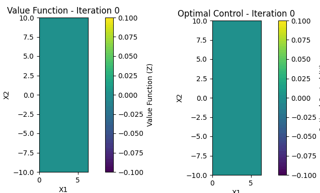

Part I: Value Iteration
Discretising a pendulum's state space and iterating toward an optimal control policy.
I've dove into Russ Tedrake's Underactuated Robotics Course and it has been an incredibly eye-opening journey thus far. This series of posts and casual articles are to take the major concepts from this course and document how I've come to use this, and other tools, to gain a better understanding of Optimal Control Theory. This will be done through python scripts and some experiments I've been able to develop.1
In this post, we will be looking at the Value Iteration algorithm and, specifically, how it gets implemented on the Double Integrator and Single Pendulum systems. All the code can be found here.
1Let's try to understand how this works first
Let's say we are given a system of equations that govern our dynamical system and we want to develop the “optimal control policy” for this system. For a simple pendulum (shown on the right, top), this is simply:
Nonlinear model · state-space form · linearised model · linearised state-space model
With this set up, Value Iteration allows us to discretize our state space (in this case theta and theta_dot), and potential control inputs. For each of these cells or buckets, we can calculate a cost function and, more importantly, the control input that produces the smallest cost value for that cell. This cost function is defined by the cell you are calculating for and the cell the controller will take you to next, governed by the dynamics above. By iterating through all cells and performing this iteration multiple times, we can converge to the optimal control policy, for which we reduce the cost function we are interested in. The bottom two images are the Cost-to-Go and Optimal Control plots that Russ provides, let's see if we can do that ourselves!
2Grid World!
We have to first begin by creating a grid world of some kind. These are the buckets of our state-space. Once again that is, for the Simple Pendulum, the angle of the pendulum and it's angular velocity. So let's code that up and try to visualize what it looks like:
# State and control discretization
X1_RANGE_MIN, X1_RANGE_MAX = 0, 2*np.pi
X2_RANGE_MIN, X2_RANGE_MAX = -10, 10
X1_NUM_BINS, X2_NUM_BINS = 151, 151
X1_BINS = np.linspace(X1_RANGE_MIN, X1_RANGE_MAX, num=X1_NUM_BINS)
X2_BINS = np.linspace(X2_RANGE_MIN, X2_RANGE_MAX, num=X2_NUM_BINS)Alright, on the right we have the desired grid world, it is 151x151. Alongside discretizing the state space, we also have to discretize our potential controller inputs. In this case, we are directly driving the torque and it can be anywhere between -3 and 3 kg-m, and we will have 21 buckets.
For each of these cells we have to calculate a value function. This value function is defined as:

- Part I: Value Iterationyou are here
- Part II: Quanser Pendulumin progress